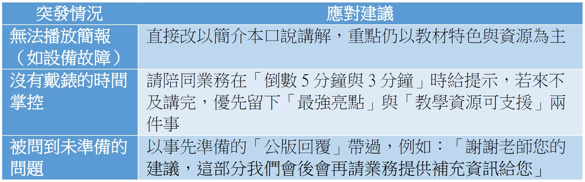

教材說明會如何講
一、說明會是什麼？
說明會是學校端正在選書的使用教師所舉辦的重要活動，目的是讓老師們：
- 了解我們教材版本的核心設計理念與特色
- 熟悉可搭配使用的教學配套資源（例如：習作、電子書、教案、PPT等）
- 理解我們版本相較於其他版本的優勢與教學便利性
- 進而支持學校選用本版本教材
二、說明會形式
三、說明會前的準備
👤【人】人員關係與溝通
說明會由「業務上單」後，再轉交給領域主編指派編輯執行。
- 單子上通常會註明：
- 業務姓名與聯絡電話（如果沒有聯絡資訊，可於翰林卓越團隊查詢）
- 說明會時間
- 說明會預計參與人數
- 學校資訊/學校使用版本
- 其他注意事項
- 收到說明會單子後，編輯需主動：
- 聯絡業務，再次確認場次人數、主題重點與特殊狀況
- 老師過往使用意見與特別想聽的內容，如改版、數位工具等
- 如果是分科的領域，各科目的分配，如輔導占50%，童軍家政各25%
- 時間分配上是否須留給業務同仁做最後訴求
- 到場教師背景等特殊狀況（例如：到場教師有同業作者等資訊）
- 和業務同仁約碰面方式與地點（同時可以詢問業務是否已經有上場順序，或是需要現場抽籤）
- 與業務確認場地設備：確認現場是否提供筆電、桌電、投影機及延長線，並確認是否需自備轉接頭或隨身碟。
- 自行查詢該校過往使用狀況與回饋紀錄（建議查閱內網「客訴系統」）
- 聯絡業務，再次確認場次人數、主題重點與特殊狀況
🗂【事】工作項目與重點準備
- 依據業務回饋的訊息，依據各校需求調整簡報內容（例如：該校重視素養教學、特別想看習作等）
- 資料與物品準備：
- 投影片（企劃提供的總版簡報／領域或自己調整過的客製場次）
- 教材樣書（簡介本、課本、習作、資源總覽→近年文宣不能在說明會DEMO，必須都要跟業務同仁確認）
- 將簡報上傳雲端，並同步存二個以上隨身硬碟，以備不時之需
🕒【時】時間安排與節奏掌握
- 建議提前2～3天完成資料彙整，不確定處可請單位主管協助審閱。
- 前一天完成檔案，並將完成檔案提供給業務同仁確認是否需調整。
- 現場說明會：提前10～15分鐘到場準備設備、進行暖場觀察。（注意！資料不可以放在學校的公用電腦內！請直接在隨身硬碟內開啟）
- 線上會議：提早測試網路、麥克風與畫面分享功能。
四、說明會中注意事項
說明會現場是一場與老師的「短時間面談」，每一個細節都會影響老師對教材與出版社的印象。因此從穿著、開場、自我介紹、講述方式，到現場應對技巧，都有一些基本原則與建議。
- 穿著建議：乾淨、正式、專業
- 建議穿著有領子的衣服（如襯衫、素面Polo衫）
- 不可穿著短褲、迷你裙、拖鞋等過於休閒的服裝
- 整體風格以「乾淨整齊、符合專業形象」為主
- 說明會態度要求：自信、有禮、落落大方
- 建議以自信語氣介紹：「大家好，我是翰林出版的○○科編輯○○○，今天很高興來到貴校介紹我們的教材與教學資源。」
- 講話時要有抑揚頓挫與停頓節奏，避免平鋪直敘或機械式朗誦
- 不要一直看簡報念稿，應多觀察現場老師反應
- 若老師有眼神交流或點頭，可順勢延伸互動或提問
- 視狀況可加入小故事、實際使用案例，增強共鳴（看各科屬性）
- 面對冷場或低互動的情況
- 若現場老師冷淡、滑手機，甚至在改作業，都不需過度焦慮，這種情況非常常見
- 編輯仍應維持語氣穩定、自信地進行簡報內容即可
- 保持節奏清楚、講述有層次，部分老師會默默聽進去
- 常見突發狀況與應對方式

五、說明會結束後可以做什麼？
說明會結束後，編輯仍有幾項重要的後續行動，不只是「講完就走」，而是延伸現場影響力、掌握選書節奏、維持良好服務（也是強化編輯專業形象）的關鍵時刻。
- 提供說明會中承諾的補充資料：若現場有老師詢問或需要補充資料（如某段教材補充資料、資源檔、配套等），應會後整理好並回傳給業務。
- 與業務確認後續動作：是否需回訪、固版本或搶版本，說明會結束後，可再與負責業務聯繫，了解是否有需要再進一步回訪補強（通常不用）